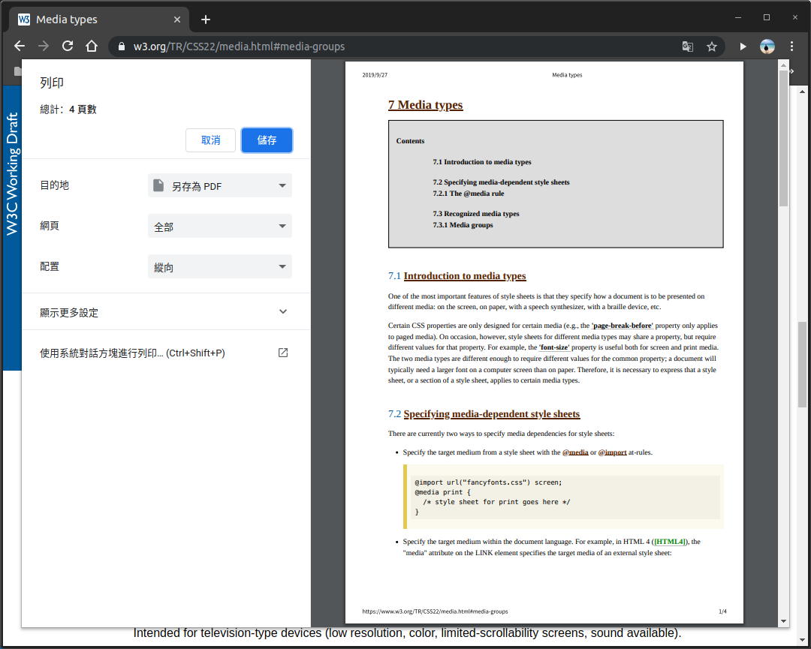

<!DOCTYPE html><html><head><meta name="generator" content="Hexo 3.9.0"><meta charset="utf-8"><title>重新認識 CSS - media type | Titangene Blog</title><meta name="description" content="利用 blog 紀錄學習歷程"><meta http-equiv="X-UA-Compatible" content="IE=edge"><meta name="viewport" content="width=device-width,initial-scale=1,maximum-scale=1"><meta name="HandheldFriendly" content="True"><meta name="apple-mobile-web-app-capable" content="yes"><meta name="author" content="Titangene"><link rel="shortcut icon" href="/favicon.ico"><link rel="alternate" href="/atom.xml" title="Titangene Blog"><meta name="description" content="如果同將一份文件應用在不同的 media 上呈現，就可以使用 media type 來指定適用的 media。本篇將介紹 CSS 的 media type。"><meta name="keywords" content="IT 鐵人賽"><meta property="og:type" content="article"><meta property="og:title" content="重新認識 CSS - media type"><meta property="og:url" content="https://titangene.github.io/article/css-media-type.html"><meta property="og:site_name" content="Titangene Blog"><meta property="og:description" content="如果同將一份文件應用在不同的 media 上呈現，就可以使用 media type 來指定適用的 media。本篇將介紹 CSS 的 media type。"><meta property="og:locale" content="zh-tw"><meta property="og:image" content="https://titangene.github.io/images/cover/css.png"><meta property="og:updated_time" content="2020-02-09T15:08:59.127Z"><meta name="twitter:card" content="summary_large_image"><meta name="twitter:title" content="重新認識 CSS - media type"><meta name="twitter:description" content="如果同將一份文件應用在不同的 media 上呈現，就可以使用 media type 來指定適用的 media。本篇將介紹 CSS 的 media type。"><meta name="twitter:image" content="https://titangene.github.io/images/cover/css.png"><meta name="twitter:creator" content="@titangeneTW"><meta name="twitter:site" content="@titangene_blog"><meta property="fb:admins" content="100001106016019"><meta property="fb:app_id" content="2470546159839111"><meta property="og:image:width" content="1200"><meta property="og:image:height" content="630"><meta name="google-site-verification" content="AaJ39L7h-nWwJjXJMhAMtXSF6H6BUgGWXC80kYvLic8"><link rel="stylesheet" href="//fonts.googleapis.com/css?family=Inconsolata|Titillium+Web"><link href="https://fonts.googleapis.com/css?family=Source+Code+Pro&display=swap" rel="stylesheet"><link rel="stylesheet" href="//use.fontawesome.com/releases/v5.7.0/css/all.css" integrity="sha384-lZN37f5QGtY3VHgisS14W3ExzMWZxybE1SJSEsQp9S+oqd12jhcu+A56Ebc1zFSJ" crossorigin="anonymous"><link rel="stylesheet" href="/style.css"><script async src="https://www.googletagmanager.com/gtag/js?id=UA-129758206-1"></script><script>!function(a){function n(){dataLayer.push(arguments)}a.dataLayer=a.dataLayer||[],n("js",new Date),n("config","UA-129758206-1")}(window)</script><script>function setLoadingBarProgress(e){document.getElementById("loading-bar").style.width=e+"%"}</script></head></html><body><div id="loading-bar-wrapper"><div id="loading-bar"></div></div><script>setLoadingBarProgress(20)</script><header class="l_header"><div class="wrapper"><div class="nav-main container container--flex"><a class="logo flat-box" href="/">Titangene Blog</a><div class="menu"><ul class="h-list"><li><a class="flat-box nav-home" href="/">Home</a></li><li><a class="flat-box nav-archives" href="/archives">Archives</a></li></ul><div class="underline"></div></div><div class="m_search"><form name="searchform" class="form u-search-form"><input type="text" class="input u-search-input" placeholder="Search"> <i class="fas fa-search"></i></form></div><ul class="switcher h-list"><li class="s-search"><a class="fas fa-search" href="javascript:void(0)"></a></li><li class="s-menu"><a class="fas fa-bars" href="javascript:void(0)"></a></li></ul></div><div class="nav-sub container container--flex"><a class="logo flat-box" href="/">Titangene Blog</a><ul class="switcher h-list"><li class="s-comment"><a class="far fa-comment-alt" href="javascript:void(0)"></a></li><li class="s-top"><a class="fas fa-arrow-up" href="javascript:void(0)"></a></li><li class="s-toc"><a class="fas fa-list-ol" href="javascript:void(0)"></a></li></ul></div></div></header><aside class="menu-phone"><nav><a href="/" class="nav-home nav">Home </a><a href="/archives" class="nav-archives nav">Archives</a></nav></aside><script>setLoadingBarProgress(40)</script><div class="l_body"><div class="container clearfix"><div class="l_main"><article id="post-css-media-type" class="post white-box article-type-post" itemscope itemprop="blogPost"><section class="meta"><h2 class="title"><a href="/article/css-media-type.html">重新認識 CSS - media type</a></h2><span class="post-time"><span class="post-meta-item-icon"><i class="fa fa-calendar"></i> </span><span class="post-meta-item-text">發表於</span> <time title="建立時間：2019-09-26 19:30:15" itemprop="dateCreated datePublished" datetime="2019-09-26T19:30:15+08:00">2019-09-26 </time><span class="post-meta-divider">|</span> <span class="post-meta-item-icon"><i class="fa fa-calendar-check"></i> </span><span class="post-meta-item-text">更新於</span> <time title="修改時間：2020-02-09 23:08:59" itemprop="dateModified" datetime="2020-02-09T23:08:59+08:00">2020-02-09</time></span> <span class="comments-count"><span class="post-meta-divider">|</span> <span class="post-meta-item-icon"><i class="fas fa-comment"></i> </span><a href="https://titangene.github.io/article/css-media-type.html#disqus_thread" class="article-comment-count" data-disqus-identifier="article/css-media-type.html" itemprop="discussionUrl"></a></span><div class="post-category"><span class="post-meta-item-icon"><i class="fa fa-folder"></i> </span><span class="post-meta-item-text">分類於</span> <span itemprop="about" itemscope itemtype="http://schema.org/Thing"><a href="/categories/css/" itemprop="url" rel="index"><span itemprop="name">CSS</span></a></span></div></section><section class="toc-wrapper"><h3>目錄</h3><ol class="toc"><li class="toc-item toc-level-2"><a class="toc-link" href="#前言"><span class="toc-text">前言</span></a></li><li class="toc-item toc-level-2"><a class="toc-link" href="#指定與-media-相關的-style-sheet"><span class="toc-text">指定與 media 相關的 style sheet</span></a></li><li class="toc-item toc-level-2"><a class="toc-link" href="#media-規則"><span class="toc-text">@media 規則</span></a></li><li class="toc-item toc-level-2"><a class="toc-link" href="#media-type"><span class="toc-text">media type</span></a></li></ol></section><section class="article typo"><div class="article-entry" itemprop="articleBody"><p></p><p>如果同將一份文件應用在不同的 media 上呈現，就可以使用 media type 來指定適用的 media。本篇將介紹 CSS 的 media type。</p><a id="more"></a><h2 id="前言"><a class="header-anchor" href="#前言"></a>前言</h2><blockquote><p>「重新認識 CSS」這個系列名稱的由來就如其名，我想要重新認識它。雖然以前就有學過 CSS，但這次想從 CSS Spec 中學到最原始的定義和內容，更加了解 CSS 的原理，讓我在切版的時候可以更加確定自己在做什麼，我踩到的雷只是因為我不夠了解它才會炸開。</p><p>在這 30 天的內容中，會將 Spec 內看到的資料整理成這個系列，也希望正在學 CSS 的各位可以更加了解它。另外我也會同時將文章發至我的 Blog，如果想直接看文內的程式碼 Demo 畫面，可以到我的 Blog 來看 😃。</p><p>本文同步發表於 iT 邦幫忙：<a href="https://ithelp.ithome.com.tw/articles/10221152" target="_blank" rel="noopener">重新認識 CSS - Media type</a></p><p>「重新認識 CSS」系列文章發文於：</p><ul><li><a href="https://ithelp.ithome.com.tw/users/20117586/ironman/2617" target="_blank" rel="noopener">iT 邦幫忙</a></li><li><a href="https://titangene.github.io/tags/it-%E9%90%B5%E4%BA%BA%E8%B3%BD/">Titangene Blog</a></li></ul></blockquote><p>有些 CSS 屬性只在某些 media 上適用，例如：<a href="https://www.w3.org/TR/CSS22/page.html#propdef-page-break-before" target="_blank" rel="noopener"><code>page-break-before</code></a> 屬性僅適用於 <code>paged</code> media，而 <code>visual</code> 是 media group，如下圖：</p><p></p><p>不同 media type 的 style sheet 可以對同一個元素的同一個屬性進行設定，但是各屬性有不同的設定值。例如：<code>font-size</code> 在電腦螢幕上通常都會比在紙上還要大，所以可以在不同 media type 分別設定不同的字體大小。</p><h2 id="指定與-media-相關的-style-sheet"><a class="header-anchor" href="#指定與-media-相關的-style-sheet"></a>指定與 media 相關的 style sheet</h2><p>下面有幾種方法可以為 style sheet 指定 media：</p><ol><li>使用 <code>@media</code> 規則指定目標 media：</li></ol><figure class="highlight css"><table><tr><td class="gutter"><pre><span class="line">1</span><br><span class="line">2</span><br><span class="line">3</span><br><span class="line">4</span><br><span class="line">5</span><br><span class="line">6</span><br></pre></td><td class="code"><pre><code class="hljs css"><span class="hljs-keyword">@media</span> screen &#123;<br>  <span class="hljs-selector-tag">body</span> &#123; <span class="hljs-attribute">font-size</span>: <span class="hljs-number">10pt</span>; &#125;<br>&#125;<br><span class="hljs-keyword">@media</span> print &#123;<br>  <span class="hljs-selector-tag">body</span> &#123; <span class="hljs-attribute">font-size</span>: <span class="hljs-number">10pt</span>; &#125;<br>&#125;<br></code></pre></td></tr></table></figure><ol start="2"><li>使用 <code>@import</code> 規則指定目標 media：</li></ol><figure class="highlight css"><table><tr><td class="gutter"><pre><span class="line">1</span><br><span class="line">2</span><br></pre></td><td class="code"><pre><code class="hljs css"><span class="hljs-keyword">@import</span> url(<span class="hljs-string">"style.css"</span>) screen;<br><span class="hljs-keyword">@import</span> url(<span class="hljs-string">"print.css"</span>) print;<br></code></pre></td></tr></table></figure><ol start="3"><li>在 HTML 要引入 style sheet 時，在 <code>link</code> 元素上的 <code>media</code> 屬性指定外部 style sheet 的目標 media：</li></ol><figure class="highlight html"><table><tr><td class="gutter"><pre><span class="line">1</span><br><span class="line">2</span><br><span class="line">3</span><br><span class="line">4</span><br><span class="line">5</span><br><span class="line">6</span><br><span class="line">7</span><br><span class="line">8</span><br><span class="line">9</span><br><span class="line">10</span><br><span class="line">11</span><br></pre></td><td class="code"><pre><code class="hljs html"><span class="hljs-meta">&lt;!DOCTYPE <span class="hljs-meta-keyword">html</span>&gt;</span><br><span class="hljs-tag">&lt;<span class="hljs-name">html</span>&gt;</span><br>  <span class="hljs-tag">&lt;<span class="hljs-name">head</span>&gt;</span><br>    <span class="hljs-tag">&lt;<span class="hljs-name">title</span>&gt;</span>Document<span class="hljs-tag">&lt;/<span class="hljs-name">title</span>&gt;</span><br>    <span class="hljs-tag">&lt;<span class="hljs-name">link</span> <span class="hljs-attr">rel</span>=<span class="hljs-string">"stylesheet"</span> <span class="hljs-attr">media</span>=<span class="hljs-string">"screen"</span> <span class="hljs-attr">href</span>=<span class="hljs-string">"./style.css"</span>&gt;</span><br>    <span class="hljs-tag">&lt;<span class="hljs-name">link</span> <span class="hljs-attr">rel</span>=<span class="hljs-string">"stylesheet"</span> <span class="hljs-attr">media</span>=<span class="hljs-string">"print"</span> <span class="hljs-attr">href</span>=<span class="hljs-string">"./print.css"</span>&gt;</span><br>  <span class="hljs-tag">&lt;/<span class="hljs-name">head</span>&gt;</span><br>  <span class="hljs-tag">&lt;<span class="hljs-name">body</span>&gt;</span><br>    <span class="hljs-tag">&lt;<span class="hljs-name">h1</span>&gt;</span>Title<span class="hljs-tag">&lt;/<span class="hljs-name">h1</span>&gt;</span><br>  <span class="hljs-tag">&lt;/<span class="hljs-name">body</span>&gt;</span><br><span class="hljs-tag">&lt;/<span class="hljs-name">html</span>&gt;</span><br></code></pre></td></tr></table></figure><h2 id="media-規則"><a class="header-anchor" href="#media-規則"></a><code>@media</code> 規則</h2><p>可在同一個 style sheet 內，為各種 media 使用 style sheet 規則：</p><figure class="highlight css"><table><tr><td class="gutter"><pre><span class="line">1</span><br><span class="line">2</span><br><span class="line">3</span><br><span class="line">4</span><br><span class="line">5</span><br><span class="line">6</span><br><span class="line">7</span><br><span class="line">8</span><br><span class="line">9</span><br></pre></td><td class="code"><pre><code class="hljs css"><span class="hljs-keyword">@media</span> print &#123;<br>  <span class="hljs-selector-tag">body</span> &#123; <span class="hljs-attribute">font-size</span>: <span class="hljs-number">10pt</span>; &#125;<br>&#125;<br><span class="hljs-keyword">@media</span> screen &#123;<br>  <span class="hljs-selector-tag">body</span> &#123; <span class="hljs-attribute">font-size</span>: <span class="hljs-number">13px</span>; &#125;<br>&#125;<br><span class="hljs-keyword">@media</span> screen, print &#123;<br>  <span class="hljs-selector-tag">body</span> &#123; <span class="hljs-attribute">line-height</span>: <span class="hljs-number">1.2</span>; &#125;<br>&#125;<br></code></pre></td></tr></table></figure><h2 id="media-type"><a class="header-anchor" href="#media-type"></a>media type</h2><p>常用的 media type：</p><ul><li><code>all</code>：適用於所有裝置</li><li><code>screen</code>：主要用於彩色電腦螢幕 (包含手機和平版)</li><li><code>speech</code>：適用於語音合成器 (speech synthesizer)、語音朗讀裝置</li><li><code>print</code>：適用於 paged material 和在列印預覽模式下在螢幕上查看的文件，例如：用瀏覽器的「列印預覽」模式察看文件 (如下圖)</li></ul><p></p><blockquote><p><code>print</code> 的 paged media 部份可參閱 <a href="https://www.w3.org/TR/CSS22/page.html" target="_blank" rel="noopener">CSS 2.2 - paged media</a>。</p></blockquote><div class="info"><p>在 <a href="https://www.w3.org/TR/CSS2/media.html#media-types" target="_blank" rel="noopener">CSS 2.1</a> 定義了其他幾種比較少見的 media type：<code>braille</code>、<code>embossed</code>、<code>handheld</code>、<code>projection</code>、<code>tty</code>、<code>tv</code> 和 <code>aural</code>，但這些 media type 在 <a href="https://www.w3.org/TR/mediaqueries/#media-types" target="_blank" rel="noopener">Media Queries Level 4</a> 已被棄用，所以不建議使用這些 media type。</p><p>當初在決定有哪些 media type 的時候，不同的 media type 有很大的區別，例如：<code>screen</code> 和 <code>handheld</code>，分別為電腦螢幕和手持裝置 (例如：PDA)，但後來這兩個的界線從愈來愈模糊，變成沒有界線。</p></div><p>資料來源：</p><ul><li><a href="https://www.w3.org/TR/CSS22/media.html" target="_blank" rel="noopener">CSS 2.2 - 7. Media types</a></li><li><a href="https://www.w3.org/TR/CSS22/page.html#propdef-page-break-before" target="_blank" rel="noopener">CSS 2.2 - 13. Paged media</a></li><li><a href="https://www.w3.org/TR/css3-mediaqueries/" target="_blank" rel="noopener">Media Queries</a></li><li><a href="https://www.w3.org/TR/mediaqueries/" target="_blank" rel="noopener">Media Queries Level 4</a></li></ul></div><div class="article-tags tags"><a href="/tags/it-鐵人賽/" title="IT 鐵人賽">IT 鐵人賽</a></div></section><div class="article-share-links"><span>分享：</span> <a class="fab fa-facebook-f" title="Facebook" target="_blank" href="javascript:window.open('https://www.facebook.com/sharer.php?u=https%3A%2F%2Ftitangene.github.io%2Farticle%2Fcss-media-type.html', 'Share on Facebook','width=600, height=600')"></a> <a class="fab fa-twitter" title="Twitter" target="_blank" href="javascript:window.open('https://twitter.com/share?url=https%3A%2F%2Ftitangene.github.io%2Farticle%2Fcss-media-type.html&amp;text=重新認識 CSS - media type&amp;hashtags=IT鐵人賽&amp;via=titangene_blog', 'Share on Twitter','width=600, height=260')"></a> <a class="fab fa-linkedin-in" title="Linkedin" target="_blank" href="javascript:window.open('https://www.linkedin.com/shareArticle?mini=true&amp;url=https%3A%2F%2Ftitangene.github.io%2Farticle%2Fcss-media-type.html&amp;title=重新認識 CSS - media type', 'Share on Linkedin','width=600, height=600')"></a> <a class="fab fa-facebook-messenger" title="Facebook Messenger" target="_blank" href="javascript:window.open('http://www.facebook.com/dialog/send?app_id=2470546159839111&amp;link=https%3A%2F%2Ftitangene.github.io%2Farticle%2Fcss-media-type.html&amp;display=popup&amp;redirect_uri=https%3A%2F%2Fwww.facebook.com%2Fdialog%2Freturn%2Fclose%23_%3D_', 'Send in Messenger','width=600, height=600')"></a> <a class="fab fa-telegram-plane" href="https://telegram.me/share/url?url=https%3A%2F%2Ftitangene.github.io%2Farticle%2Fcss-media-type.html&text=重新認識 CSS - media type" target="_blank"></a></div><nav id="article-nav"><a href="/article/css-cascading-and-specificity.html" id="article-nav-prev" class="article-nav-link-wrap" title="重新認識 CSS - Cascading &amp; Specificity" rel="prev"><strong class="article-nav-caption">Prev</strong><p class="article-nav-title">重新認識 CSS - Cascading &amp; Specificity</p><i class="fas fa-angle-left"></i> </a><a href="/article/css-media-query.html" id="article-nav-next" class="article-nav-link-wrap" title="重新認識 CSS - Media query" rel="next"><strong class="article-nav-caption">Next</strong><p class="article-nav-title">重新認識 CSS - Media query</p><i class="fas fa-angle-right"></i></a></nav><section id="list_related_posts"><h2>相關文章</h2><ul class="related-posts"><li class="related-posts-item"><a class="related-posts-link" href="/article/css-float.html">重新認識 CSS - float</a><div class="related-posts-item-abstract">本篇將介紹 CSS 的 float 屬性。前言「重新認識 CSS」這個系列名稱的由來就如其名，我想要重新認識它。雖然以前就有學過 CSS，但這次想從 CSS Spec 中學到最原始的定義和內容，更加了解 CSS 的原理，</div></li><li class="related-posts-item"><a class="related-posts-link" href="/article/css-ifc.html">重新認識 CSS - Inline formatting context (IFC)</a><div class="related-posts-item-abstract">本篇將介紹 CSS 的 inline formatting context (IFC)。前言「重新認識 CSS」這個系列名稱的由來就如其名，我想要重新認識它。雖然以前就有學過 CSS，但這次想從 CSS Spec 中學到</div></li><li class="related-posts-item"><a class="related-posts-link" href="/article/css-media-query.html">重新認識 CSS - Media query</a><div class="related-posts-item-abstract">今天來介紹 CSS 的 media query 和 media feature。前言「重新認識 CSS」這個系列名稱的由來就如其名，我想要重新認識它。雖然以前就有學過 CSS，但這次想從 CSS Spec 中學到最原始的</div></li><li class="related-posts-item"><a class="related-posts-link" href="/article/css-selector-pseudo-class-2.html">重新認識 CSS - Pseudo-class (偽類) (2)</a><div class="related-posts-item-abstract">Selector (選擇器) 可用來選擇 HTML 和 XML 文件中的節點，並將樣式屬性綁定到文件 (HTML 和 XML) 中的元素上。當選擇器與某元素 match 的時候，就可以對選到的元素進行 CSS 樣式設定。</div></li><li class="related-posts-item"><a class="related-posts-link" href="/article/css-containing-block.html">重新認識 CSS - Containing block</a><div class="related-posts-item-abstract">本篇將介紹 CSS 的 Containing block。前言「重新認識 CSS」這個系列名稱的由來就如其名，我想要重新認識它。雖然以前就有學過 CSS，但這次想從 CSS Spec 中學到最原始的定義和內容，更加了解</div></li><li class="related-posts-item"><a class="related-posts-link" href="/article/css-import.html">重新認識 CSS - @import</a><div class="related-posts-item-abstract">CSS 的 @import 規則可以從其他 style sheet 中 import 樣式規則，本篇將介紹如何使用。前言「重新認識 CSS」這個系列名稱的由來就如其名，我想要重新認識它。雖然以前就有學過 CSS，但這次想</div></li></ul></section><section class="comments" id="comments"><h2>討論區</h2><div id="disqus_thread"><noscript>Please enable JavaScript to view the <a href="https://disqus.com/?ref_noscript">comments powered by Disqus.</a></noscript></div></section></article><script>window.subData={title:"重新認識 CSS - media type",tools:!0}</script></div><aside class="l_side"><section class="m_widget about"><div class="avatar-section"><style>.avatar-cover{background:url(/images/avatar_cover.jpg) 0 10%/cover no-repeat}</style><div class="avatar-cover"></div></div><div class="header">Titangene</div><div class="content"><div class="desc">利用 blog 紀錄學習歷程</div></div><div class="content"><meta itemprop="url" content="https://titangene.github.io"><div class="social-wrapper"><a itemprop="sameAs" href="https://github.com/titangene" class="social github" target="_blank" rel="external"><span class="fab fa-github-alt"></span> </a><a itemprop="sameAs" href="https://www.facebook.com/titangene.tw" class="social facebook" target="_blank" rel="external"><span class="fab fa-facebook-square"></span> </a><a itemprop="sameAs" href="https://www.instagram.com/titangene/" class="social instagram" target="_blank" rel="external"><span class="fab fa-instagram"></span> </a><a itemprop="sameAs" href="https://www.flickr.com/photos/titangene" class="social flickr" target="_blank" rel="external"><span class="fab fa-flickr"></span> </a><a itemprop="sameAs" href="/atom.xml" class="social rss" target="_blank" rel="external"><span class="fas fa-rss"></span></a></div></div></section><section class="m_widget facebook_page"><div class="fb-page" data-href="https://www.facebook.com/titangene.blog/" data-width="250" data-small-header="false" data-adapt-container-width="false" data-hide-cover="false" data-show-facepile="true"><blockquote cite="https://www.facebook.com/titangene.blog/" class="fb-xfbml-parse-ignore"><p><a href="https://www.facebook.com/titangene.blog/" class="social facebook" target="_blank"><span class="fab fa-facebook-square"></span></a></p><p><a href="https://www.facebook.com/titangene.blog/">Titangene Blog</a></p><p>Loading...</p></blockquote></div></section><section class="m_widget recent"><div class="header">Recents</div><div class="content"><ul class="entry"><li><a itemprop="url" class="flat-box" href="/article/git-commit-object.html"><time>2020-03-15</time><div class="name">深入 Git：Git 物件儲存 - commit 物件</div></a></li><li><a itemprop="url" class="flat-box" href="/article/git-index.html"><time>2020-03-08</time><div class="name">深入 Git：index 檔案</div></a></li><li><a itemprop="url" class="flat-box" href="/article/git-tree-object.html"><time>2020-03-01</time><div class="name">深入 Git：Git 物件儲存 - tree 物件</div></a></li><li><a itemprop="url" class="flat-box" href="/article/git-auto-crlf.html"><time>2020-02-23</time><div class="name">處理 Git 斷行字元的問題</div></a></li><li><a itemprop="url" class="flat-box" href="/article/git--blob-object.html"><time>2020-02-16</time><div class="name">深入 Git：Git 物件儲存 - blob 物件</div></a></li></ul></div></section></aside><script>setLoadingBarProgress(60)</script></div></div><footer id="footer" class="clearfix"><div class="social-wrapper"><a href="https://github.com/titangene" class="social github" target="_blank" rel="external"><span class="fab fa-github-alt"></span> </a><a href="https://www.facebook.com/titangene.tw" class="social facebook" target="_blank" rel="external"><span class="fab fa-facebook-square"></span> </a><a href="https://www.instagram.com/titangene/" class="social instagram" target="_blank" rel="external"><span class="fab fa-instagram"></span> </a><a href="https://www.flickr.com/photos/titangene" class="social flickr" target="_blank" rel="external"><span class="fab fa-flickr"></span> </a><a href="/atom.xml" class="social rss" target="_blank" rel="external"><span class="fas fa-rss"></span></a></div><div>© 2018 - 2020 <span itemprop="copyrightHolder">Titangene</span></div><div>Powered by <a href="https://hexo.io/" class="codename" rel="external">Hexo</a> - Theme <a href="https://github.com/stkevintan/hexo-theme-material-flow" class="codename" rel="external">MaterialFlow</a></div><div><a rel="license" href="http://creativecommons.org/licenses/by-nc-sa/4.0/" rel="external"></a></div></footer><script>setLoadingBarProgress(80)</script><script src="//cdnjs.cloudflare.com/ajax/libs/jquery/2.1.4/jquery.min.js"></script><script src="https://cdnjs.cloudflare.com/ajax/libs/moment.js/2.24.0/moment-with-locales.min.js"></script><script>moment.locale("zh-tw")</script><script src="https://cdnjs.cloudflare.com/ajax/libs/clipboard.js/2.0.0/clipboard.min.js"></script><script src="/js/jquery.fitvids.js"></script><script>var SEARCH_SERVICE="hexo",ROOT="/";ROOT.endsWith("/")||(ROOT+="/")</script><script src="/js/search.js"></script><script src="/js/app.js"></script><script src="/js/clipboard-use.js"></script><script>var disqus_shortname="titangene-blog",disqus_config=function(){this.page.url="https://titangene.github.io/article/css-media-type.html",this.page.identifier="article/css-media-type.html",this.page.title="重新認識 CSS - media type"};!function(){var t=document.createElement("script");t.async=!0,t.src="//"+disqus_shortname+".disqus.com/embed.js",t.setAttribute("data-timestamp",""+new Date),(document.head||document.body).appendChild(t)}()</script><script id="dsq-count-scr" src="https://titangene-blog.disqus.com/count.js" async></script><div id="fb-root"></div><script>window.fbAsyncInit=function(){FB.init({appId:"2470546159839111",autoLogAppEvents:!0,xfbml:!0,version:"v2.11"}),FB.AppEvents.logPageView()},function(e,n,t){var o,s=e.getElementsByTagName(n)[0];e.getElementById(t)||((o=e.createElement(n)).id=t,o.src="//connect.facebook.net/zh_TW/sdk.js",s.parentNode.insertBefore(o,s))}(document,"script","facebook-jssdk")</script><script>setLoadingBarProgress(100)</script></body>